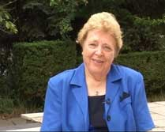

|
- Расскажите, пожалуйста, о своём детстве, о своём отце, о его мировоззрении. - Я родилась 16 августа 1934 года. В то время мой отец был генералом полиции Гамбурга. Я думаю, что по своему мировоззрению, он был националист. Он любил Германию. В начале он не видел всю ситуацию - кем на самом деле был Гитлер. Он не понимал этого, как и многие люди в Германии. Мой отец был военным человеком. Он уже служил во время I Мировой войны, и его жизнь - это была военная жизнь. Когда я родилась, Гитлер посетил наш город. Мой отец встречал его в аэропорту. Именно тогда Гитлер, узнав о моём рождении, предложил отцу стать моим крёстным. Отец согласился. Я думаю, он не понимал, что это значит на самом деле. В 1935 году Гитлер призвал его в Берлин. Отец был назначен начальником полиции в Берлине. Затем, в 1936 году, он начал служить как телохранитель Гитлера. Отец был с ним на стадионах олимпийских игр в Мюнхене. Я думаю, что именно в Берлине, когда отец работал близко с Гитлером, Бог открыл глаза, и он осознал наконец - кто такой Гитлер. Мой отец любил евреев. В течении всего времени, пока служил начальником полиции, он помогал бежать евреям. - Какое время он был начальником полиции?- в 1935 - 1937 годах. - Каким образом это в нём совмещалось? То есть - он друг Гитлера, начальник полиции и он любит евреев?- Он не был другом Гитлера на самом деле. Возможно, Гитлер думал, что он был его другом. Мой отец пытался каким-то образом управлять, вести дела. Но он любил еврейский народ. И это было как раз то время, когда гестапо и СС должны были полностью захватить полицию. И отец сказал: "Нет, я не собираюсь подчиняться СС и гестапо". В то же время он начал помогать некоторым евреям бежать из Берлина. Безусловно, это была тайна. Мой отец был верующим человеком и любил евреев. Гестаповцы начали преследовать отца. И однажды вечером ему предложили выбор. Они сказали: "Либо ты будешь служить нам и послушаешь нас, либо возьмешь вот эту таблетку. Когда ты это проглотишь, все узнают, что у тебя был сердечный приступ. Либо мы забираем твою семью в концентрационный лагерь. И мой отец выбрал смерть. Он умер в мае 1938 года. - Было ли характерным явлением для Германии того времени то, что некоторые люди, в том числе военные и верующие противились Гитлеру?- Да, многие противостояли этому режиму. Несколько лет назад появилась статья в одном из журналов: "Генералы, которые были доведены Гитлером до смерти". Одно из движений противостояния называлось "Видешнант". Они организовали покушение на Гитлера. Но оно было не успешным, и всех заговорщиков убили. Многие из них были военными людьми. - Но ваш отец противостоял Гитлеру ещё до начала войны с Россией?- Да, в то время уже многие противостояли Гитлеру. Но нацисты старались скрыть этот факт. Это было не открытое противостояние. И такие генералы были просто устранены через вот такие методы, как яд. - Ваш отец любил евреев, потому что он сам был еврей, или потому что был генерал или же христианин?- Он был другом евреев, просто другом. У него было много еврейских друзей задолго до войны. Отец просто не хотел убивать их. - Как вы восприняли смерть своего отца?- Мне было всего четыре года и, скорее всего, это привело меня в очень большое замешательство. Я просто не могла понять, почему его нет больше рядом со мной. И, конечно, он не мог мне сказать об этом. - Что вы чувствовали при этом?- Я думаю, это было одиночество и страх. В то время страх уже начал закрадываться в мою жизнь. - Как вы жили потом, после смерти отца?- Мы жили в Берлине. При жизни моего отца мы жили в большом доме со слугами. Позднее у нас остался один слуга. В 1939 году, когда разразилась война, жизнь стала очень небезопасна, и в 1942 году Геббельс сказал, что все женщины и дети должны покинуть Берлин. Мы все были переселены в восточную часть Германии. Нас эвакуировали в то место, где сейчас расположена Польша. Мы жили там с друзьями на большой ферме, возле Балтийского моря и думали, что война скоро закончится. Но русские вторглись очень быстро с юга и с востока, прижимая миллионы немцев к Балтийскому морю. И, конечно же, русские просто отплатили за то, что мы сделали в России. Но я была ребёнком, и не понимала что происходит. У меня было много страха, потому что русские не жалели никого. Они захватывали и разрушали всё. Они, со своими танками и самолётами, старались всё смести с лица земли. Многие люди пытались бежать через Балтийское море на кораблях. Но почти все суда разбомбили. Я в реальности пережила ад в то время. В начале я пережила смерть своего отца, это было очень болезненно. Но время вторжение русских, было для меня адом. Почти три недели мы были в дороге. Эта зима была очень холодная. И чудом было то, что мы вообще выжили. - Это был 1945 год?- Да, это был февраль 1945 года. - Вы сказали, что русские разбомбили много кораблей. Это были военные корабли или гражданские?- Это были гражданские корабли с беженцами. - Вы хотите сказать, что русские нападали на мирных людей?-Да, извините, конечно, но это так. Мне очень жаль, но это правда. Это был результат того, что мы делали в России. Мы тоже делали ужасные вещи в России. И на обеих сторонах войны были женщины и дети. Позже, в дальнейшем, на Урале я встретилась с одним из бывших главарей местной мафии. Он отдал свою жизнь Иисусу Христу. Его отец был в высоком военном звании во время II Мировой войны. Он рассказал, что отец уже стар, но до сих пор не может найти себе мира. Отец говорит: "То, что мы делали с женщинами и детьми - было ужасно. Мы хотели победить, завоевать нацистскую Германию. Мы были счастливы оттого, что Гитлер был наконец мёртв. Но то, что мы делали с женщинами и детьми - было ужасно". И этот христианин спросил меня: "Роземари, можете ли вы простить моего отца? Я хочу передать ему, что вы прощаете его". - В своей книге вы пишете об одной немке, которой во время войны было тринадцать лет, и русские изнасиловали её шестьдесят восемь раз за два дня.- Когда я была в Америке, одна женщина подошла ко мне и сказала: "Роземари, я ненавижу русских до сего дня". Я спросила: "Почему? Что произошло с тобой?", и она рассказала мне: "Когда мне было тринадцать лет, русские вошли в Геданс - это большой балтийский город, иза два с половиной дня меня изнасиловали шестьдесят восемь раз. И когда пришёл шестьдесят девятый, кто-то смилостивился надо мной. И этого человека убили. Всю жизнь я росла и имела в себе эту ненависть. Но сегодня, Роземари, я поняла, что мне необходимо простить. Пожалуйста, передай русским людям, что сейчас я люблю их, я простила их, и хочу иметь мир". Поэтому я была очень благодарна, что смогла принести ей это примирение. - Изнасилование - это было разовым или массовым явлением, во время, когда русские захватили Германию?- Это был обычный случай в то время. Прежде, чем русские пришли в наш город, я слышала уже эти ужасные новости и была в большом страхе. Но на самом деле всё происходило именно так. - Как вы пережили эти детские годы: сначала убивают отца, потом вы переезжаете, затем война, и это ужасное окончание войны. Как вы себя чувствовали душевно?- Я ощущала полную безнадёжность. Мы были людьми второго сорта. Восточногерманские немцы не воспринимали нас. Они не хотели принимать беженцев, а мы потеряли всё. Мы выглядели ужасно, имели ужасный запах - так что от семьи генерала не осталось ничего. Именно в это время у меня в сердце родилась эта ужасная горечь. Я, как и многие люди в то время, постоянно задавала вопрос: "Почему именно я, Господи? Почему я должна пережить всё это? Почему я? Где Бог во всём этом? И почему это произошло именно со мной?". У меня было ощущение, что Бог со мной несправедлив. Я чувствовала себя отверженной. Думаю, что именно в это время я начала приобретать эту горечь. Я полностью закрылась внутри и не хотела говорить ничего о своём прошлом. До сих многие люди, которые старше меня, не хотят никому говорить о своих переживаниях. Над их жизнью царит молчание. В начале этого года я посетила музей Холокоста в Нюрнберге. Я присела на стул, а рядом со мной сидела женщина. Она начала плакать. Я спросила: "Почему вы плачете? Почему вы здесь?". Она сказала: "Я ищу информацию о своих родителях. Мои родители пережили II Мировую войну. Мой отец работал в СС. Когда я спрашиваю моих родителей о войне, они не хотят ничего рассказывать. Но ночью они просыпаются от криков. Я хотела бы помочь им как-то, потому что внутри их боль". Я рассказала ей, как можно им помочь. И таких людей в Германии очень много. Тех, которые пережили войну, которые всё ещё живы, но не могут найти мира. - Можно сказать, что это массовое явление?- Да, если говорить о людях моего возраста и старше - безусловно, да. После войны они просто отказываются говорить об этом. Они продолжают молчать всё это время, из-за того, что это приносило очень большую боль. Либо они пережили нечто подобное тому, что пережила я, либо они сами служили в армии, или, возможно даже, служили в концентрационных лагерях. - Как это молчание отражается на следующем поколении? То есть, это поколение промолчало, следующее ничего не знает и живет хорошо?- Следующее поколение, как мои дети, они потеряли ориентацию. Они не могут отождествить себя со своими родителями. Они хотят знать что-то о жизни своих родителей, но весь период II Мировой войны покрыт молчанием. Я могла поговорить со своими детьми, только потому, что Бог освободил меня. Но сейчас на подходе уже поколение моих внуков, и прежде, чем умрёт это старое поколение, мы должны обратиться к молодому поколению и объяснить им. Я люблю говорить со своими внуками, которых у меня семь. У меня два сына, один из них пастор. Одному из них сорок пять, а другому сорок два. - Вы сказали, что смогли рассказать, только когда Бог освободил вас. Что вы имеете в виду?- Долгое время я возрастала с этой ненавистью, болью и страхом. Они стали частью моей жизни. По ночам мне снились кошмары, я кричала. Я всегда видела во сне русских, которые приближаются. И я не могла наслаждаться салютами, именно из-за того, что всё это приносило мне воспоминания войны. И когда Бундесвер проводил тренировочные полёты, это для меня всегда было страхом. Все эти воспоминания. Я никогда не могла поехать в Восточную Германию из-за того, что не хотела приближаться к русским военным. Я видела эту униформу, и не хотела даже приближаться. Я была счастлива, что существовал "железный занавес" и считала, что очень хорошо то, что русские изолированы там. А в 1968 году, когда русские вошли в Прагу, я находилась в Нюрнберге. Я закрыла свои двери на замок, и вся тряслась. А что, если русские войдут в Восточную Германию? А что, если они снова захотят войти? Я была в ужасе. И потом, в конце 60-х годов, через тяжёлые обстоятельства в моём браке, мы с мужем нашли живого Бога. До того времени мы просто были лютеранами на бумаге. В Германии у нас есть государственная церковь. И порядок такой: при вашем рождении вы получаете документ, что вы - лютеранин или католик. И мы получили документ, что мы лютеране. Безусловно, что нам иногда приходилось ходить в церковь. Мы молились молитвой "Отче наш", но я не относилась к этому серьёзно. Когда мы просим: " …прости нам грехи наши, как и мы прощаем…", я не воспринимала эти слова серьёзно. И потом однажды Бог сказал мне: "Роземари, ты должна простить, тогда ты найдёшь мир. Тогда Я смогу дать тебе свободу". Я сказала: "Хорошо, Бог, я могу простить, но только не русских". - Извините, Вы говорите - Бог вам сказал, вы Богу сказали. Что вы под этим подразумеваете?- Я имею в виду то, что увидела, что Бог говорит об этом в Библии. Бог говорит с нами через Своё Слово. В Библии, Евангелие от Матфея 6 глава, написано, что Иисус учил своих учеников о прощении. И Он сказал очень ясно - прощайте, да прощены будете. И если вы не прощаете, то Небесный Отец не может простить вас. - На сколько я понимаю, когда вы прочитали эти слова в Евангелии, то поняли, что у вас нет полного прощения русских?- Мы настолько слепы, пережив такую боль, пытаемся задавить её, закопать. Боль очень глубоко сокрыта в нас. Мы стараемся жить так, как будто всё это уже не реально. Только когда я позволила всему этому всплыть на поверхность, то увидела, что на самом деле жила в непрощении по отношению к русским. И что таким образом жила не в соответствии со Словом Божьим. Это было болезненно, но принесло свободу и благословение в мою жизнь. - Смотрите, по логике получается так: Гитлер убил вашего отца, русские убили Гитлера, а вы больше боялись русских?- Потому что, когда я потеряла своего отца, я была ребёнком. Мой отец исчез, я не была вовлечена в этот процесс. Я не видела то, как это происходило. Но, когда пришли русские, я была непосредственно вовлечена во всё. Из-за того, что мне было четыре года, потеря отца не была для меня такой живой. И не было переживания личной встречи с нацистами. У моей мамы были, у меня не было. - Вы пишете в своей книге о том, что после окончания войны вы жили в деревне. Тогда вы носили деревянные башмаки, и крестьяне считали себя выше вас.- Это было из-за того, что мы являлись беженцами. Миллионы людей, которые пытались выжить. Некоторые выжили, приехали в Западную Германию. Но мы были полностью истомлены, потеряли всё. Нас пытались расселить по фермам, чтобы мы выжили. У нас не было денег, нам приходилось очень тяжело работать. Так это было. - Получается, проблемы человека носят такой наднациональный характер. Потому что вы рассказали о проблемах с Гитлером, проблемах с русскими и о проблемах с немцами - своими соотечественниками.- Это начинается там, где люди живут вместе. Мы раним друг друга, и причиняем боль. В деноминациях, в церквях, в народах. Мы постоянно наносим вред друг другу. И единственный выход из всего этого - это прощение. - Вы сейчас живёте в Швеции. Это одна из самых спокойных стран в мире. Там, наверное, нет проблем?- Конечно, конечно там есть проблемы. Но Бог призвал нас в Швецию. У нас есть там миссионерская организация. Я думаю, что проблемы есть повсюду. Где есть люди, там есть проблемы. Мы должны видеть их, и мы должны прощать друг друга. - Видите ли вы в спокойной Швеции, где нет войны, проблемы которые ранили вас, когда вы были ещё маленькой девочкой?- В Швеции много эмигрантов, им очень трудно жить. Шведы не принимают их. Многие эмигранты живут в похожих на гетто условиях. То есть это не настоящее гетто, но это изолированные районы. Также уровень антисемитизма очень сильно возрастает. Во время II Мировой войны Швеция пыталась быть нейтральной страной, но в реальности они не были нейтральными. Они отказались принимать беженцев евреев. Они позволили немецким военным проезжать в Финляндию и Норвегию. Они помогали делать оружие немцам. Снаружи Швеция выглядела очень красиво. И это очень хорошие люди, но все мы имеем своё прошлое. - Получается, что у человека могут быть проблемы - когда война, могут быть проблемы - когда мир, и вы пережили все эти тяжёлые испытания. Может быть надо послушаться Бога, всех простить и успокоиться на этом? Но вы, получается, не только успокоились, но и стали служить евреям?- Примерно полтора года назад я обнаружила, что сделали христиане и церковь по отношению к еврейскому народу. Всё это началось ещё до Холокоста. Безусловно, как немка, я хорошо понимаю, что мы сделали во время Холокоста. Я разговаривала со многими людьми, которые выжили в Холокосте. Я была в Израиле, была на конференциях примирения. Я просила прощение, служила этим людям, чтобы показать, что люблю их. В прошлом году я была в Аушвице. У меня возникло сильное ощущение, что мне необходимо пойти в газовые камеры. Это было моё первое посещение газовых камер. Я стояла там и спрашивала Бога: "Что мне здесь делать?", и Бог показал, что я должна говорить о Его любви там. Но я сказала: "Господи, ведь никому не разрешено говорить здесь. Проповедовать в этих газовых камерах нельзя, потому что все должны проходить через них в тишине. И тогда вошла туристическая группа. Я у них спросила: "Могу ли я что-то сказать?", и мне дали возможность говорить. Я начала проповедовать прямо в этой газовой камере о Божьей любви и о прощении. И Дух Божий просто покрыл всё это место. Я говорила двум туристическим группам о Божьей любви. Вскоре я осознала, что мы, как христиане должны принести Божью любовь к евреям, не только, как немцы, но все - как христиане. Потому что с самого начала мы совершили большой грех по отношению к еврейскому народу. С самого начала, когда церкви и деноминации были основаны. На соборе у императора Константина присутствовало, по-моему, 358 священников. И на этом соборе было решено - вырвать все еврейские корни христианской веры. На этом собрании было вынесено решение - изменить календарь. Евреям было запрещено праздновать и посещать церковь. И начиная с того времени, началась история преследований, когда руки церкви были окроплены еврейской кровью. Я узнала о мессианской общине в 2006 году, когда служила впервые с пастором Борисом Сауловичем в России. Я узнала о мессианском движении, узнала, почему нам нужно возвратиться к нашим еврейским корням. Мне стало видно, насколько слепы глаза церковных людей, увидела эту постоянную борьбу внутри церкви. Но я знала также, что Бог хочет использовать меня, как немку, чтоб принести любовь еврейскому народу. - Как вы считаете, немецкие христиане виноваты в геноциде, или это только идеология фашизма?- Я думаю, что многие годы немецкие христиане чувствовали вину за то, что было сделано во время Холокоста. Многие из них ездили в Израиль на конференции покаяния. Они знали, что теперь им нужно любить еврейский народ. Они хотели изменить существующее положение вещей. Но я обнаружила и то, что слепота всё ещё присутствует, и что наша вина лежит намного глубже. Она лежит глубже в поколениях, глубже в веках, намного глубже, чем Холокост. Большинство христиан не видят этого. Они даже не подозревают, что существует это мессианское движение. Если, например, еврей принимают Иешуа, то христиане думают, что этот еврей должен стать католиком, баптистом или кем-то другим. Как бы церковь хочет поглотить евреев. Если еврей принимает Иисуса, они думают, что еврей должен называть себя христианином и отвергнуть своё еврейство. И когда, во время проповеди в церквях Германии, Америки или Швеции я задаю вопрос: "Есть ли здесь евреи?", то не вижу никакой реакции. - Вы говорите, что у христиан вековые проблемы по отношению к евреям. Вы имеете в виду немецких христиан?- Нет, я имею в виду всех христиан. Немецкий Холокост - это была только верхушка айсберга. Люди ослеплены. Если я задаю вопрос: "Есть ли здесь евреи?", то в ответ молчание. Тогда ещё раз спрашиваю: "Неужели ни одного нет?", тогда одна рука поднимается несмело. И потом, когда я переспрашиваю этих людей: "Почему же вы сразу не сказали, что вы евреи?", слышу в ответ: "Я боялся". То есть, евреи продолжают прятаться. Они стараются отвергнуть своё еврейство. И нет понимания того, что еврей принимая Иешуа, может оставаться евреем и в своём еврействе. Позвольте мне взять одну бумагу. Это было очень интересно для меня. Как я уже сказала, всё это началось на первом соборе в 325 году в Никее. Это был Никейский собор во главе с императором Константином. И с этого момента взаимоотношение между евреями и христианами было разрушено. Безусловно, что время от времени в мире происходили пробуждения веры. Например, как в Германии, в городе Цинцендорф, или в Англии, или в других местах. Там были пробуждения. Но, если посмотреть на эти пробуждение ближе, то мы увидим лидеров, которые любили еврейский народ, и желали примирения. Они желали покаяться, за то, что сделали христиане, и они пережили пробуждение. И я верю, что в наше время, если мы будем понимать примирение евреев и христианской церкви, то это принесёт пробуждение. Когда я познакомилась с пастором Борисом Сауловичем (Грисенко, раввин Киевской Еврейской Мессианской Общины - прим авт.), то не понимала всю эту картину. Я сказала: "Господь, мне нужно личное откровение о том, что происходит". И Бог проговорил ко мне в Израиле. Он сказал: "Роземари, прежде чем Я вернусь, очень важно, чтобы Моя Невеста состояла вместе из евреев и язычников. И те, кто понимает, кто желает этого единства, станут Моей Невестой. И благодаря этому, Я соберу их из всех деноминаций. Если они это поймут. Все: католики, православные, баптисты. Если они будут едины в этой цели. Если они оставят свои различия. Потому что они будут едины в этой цели". И сейчас мы хотим проявить любовь к еврейскому народу. Они - Божий избранный народ. Мы хотим любить их, хотим снова учиться у них, и хотим возвратиться к нашим еврейским корням. И, насколько я понимаю, это является ключом к пробуждению. Мы можем пытаться создать единство, можем собирать молиться вместе, и делать много разных вещей. Но всё равно мы отличаемся друг от друга. Поэтому нам необходимо Божье откровение о том, что Он хочет объединить Своё Тело. Я читала книгу, где автор подсчитал, что сегодня существует 160 традиционных церквей, и 23 тысячи различных христианских деноминаций. Тело Христа разделено. Единственное, что может соединить нас, это единство с евреями. И немногие люди хотят об этом слушать. - Не думаете ли вы, что Никейский собор, на котором отделили евреев и христиан, был просто исторический этап в развитии Церкви?- Да, это был этап разделения в христианстве. Безусловно, что католическая церковь получила власть, и потом образовались разные другие деноминации. И сейчас мы имеем 23 тысячи. Они все оставили свои еврейские корни, - все! - Если мы имеем тысячи деноминаций, это выглядит очень демократично.- Безусловно, у нас у всех есть свои маленькие царства, и каждый считает себя правым. Но в Божьих глазах мы промахиваемся, если не сходимся вместе с Его избранным народом. И именно этого Он ожидает. Когда я проповедую в церквях, то сталкиваюсь лицом к лицу с антисемитизмом. Я говорю себе: "Я не пойду на компромисс!", и говорю им: "Если вы осознаёте то, что вам необходимо покаяться в антисемитизме, просите, чтобы Бог открыл ваши глаза". Люди встают, каются, и мгновенно Божья сила сходит на них. Они начинают танцевать и радоваться. Я не могла себе представить, что это были настолько глубокие корни. Я была не достаточно образована. Сейчас шаг за шагом изучаю и начинаю понимать, откуда всё это приходит. Всё что мы сделали, просто потрясает меня. - Вы считаете антисемитизм большим грехом?- Да, возможно одним из самых больших грехов. Может быть самым большим. Потому что через антисемитизм мы касаемся того, что избрал Бог. Иисус пришёл, как еврей к своему народу. И они не приняли Его. Именно из-за этого Евангелие было принесено к язычникам. Вы, возможно, знаете - это написано в послании к Римлянам, 11 глава. Чтобы они возревновали о Боге своём. Нам не удалось сделать так, чтоб они возревновали о своём Боге. И они не хотят иметь то, что мы имеем. Евреи говорят: "Если это та любовь, которую христиане показывают нам… Нам не нужна такая любовь". И поэтому само название христианин для евреев не привлекательно, и они ничего не хотят иметь общего с христианством. Я имею в виду евреев, которые не посвящены в это, не знают о сущности христианства. Безусловно, что сейчас между церквями есть мосты с мессианскими общинами. Мы стараемся поддерживать это наилучшим образом. Но я думаю, что этого не достаточно. Мы должны больше говорить. Когда я начала служить вместе с пастором Борисом Сауловичем, сначала не осознала, на столько важно это было для меня, как немки и дочери немецкого генерала. Имея бывшим крёстным отцом Гитлера, служить в то же время вместе с мессианским раввином. Мы начали вместе проповедовать о примирении и Божьей любви. Я поняла, что только Бог мог это сделать. Потому что с человеческой точки зрения это невозможно. Но Бог использует сейчас Гитлера, для того чтоб открыть двери для Евангелия. - На сколько я понял, в процессе вашего прощения было три этапа: первый - когда вы по-настоящему поверили в Бога, второй - вы простили русских, третий - поняли необходимость покаяния христиан перед евреями. Какой из этих трёх этапов является для вас наиболее важным?- Безусловно, что мы должны быть примирены с Богом через Кровь Христа. Это очень важно для каждого человека лично. Но в то же время Бог хочет примирить нас со своим народом. Я думаю, что это идёт вместе, оба этих события. Они оба очень важны для вхождения в полноту благословения. Именно из-за того, что Бог обещает свои благословения. Мне трудно сказать, что более важно. Потому что, когда я начала служить в этом направлении, я увидела, какая потрясающая свобода приходит к людям, которые понимают это. Это подобно тому, как люди возвращаются в самые истоки Церкви. Они возвращаются в раннюю Церковь в книге Деяний. И это нечто, что Бог сегодня восстанавливает - взаимоотношение с Ним, взаимоотношения друг с другом, и пересечение границ деноминаций. И затем, соединение вместе в одно Тело с евреями. - Как вы себе представляете этот процесс? Всё-таки веками христиане дистанцировались от евреев, а евреи ненавидели христиан. Как можно разрушить эту стену, которая возводилась между христианами и евреями почти две тысячи лет?- Через Божью любовь. Мы можем победить эту стену только Его любовью. Недавно, когда я сидела в аэропорту, наблюдала за одной пожилой еврейской парой, которая несла тяжёлые чемоданы. И вдруг передо мной возник образ, как будто эти люди идут в концлагерь. Я начала плакать. И я спросила: "Боже, отчего эти слёзы? Может это просто сострадание? Может, я просто чувствую эту боль?". И Бог сказал мне: "Ты должна чувствовать эту боль антисемитизма. Если ты чувствуешь боль, то ты можешь позволить любви Моей течь. И когда Моя любовь протекает через тебя, евреи осознаю присутствие Иешуа". И когда я была в Назарете, в марте этого года, то разговаривала там с неверующими евреями. Я сказала: "Боже, пускай Твоя безусловная любовь течёт через меня к ним". Я стояла перед ними, и они покаялись перед Иешуа. Я не знаю, что я сделала, я сказала: "Боже, мне ничего другого не нужно, но я хочу, чтоб Твоя любовь текла". Я хочу рассказать одну историю о профессоре из Швеции. Это был человек, ему примерно 60-ти лет, который пришёл на собрание и сказал, что ищет Бога. Он попросил, чтоб я помогла ему. Я спросила: "Почему вы меня просите?", Он ответил: "Я вижу живого Бога в ваших глазах". Мне просто захотелось громко закричать "Аллилуйя!", но боялась, что спугну его. Я постаралась быть спокойной, и ответила, что могу вам показать путь к живому Богу. Потом он представился и рассказал, что он профессор, который провёл много медицинских исследований, но не нашёл ответ на вопрос Жизни. Я посмотрела в его глаза, и спросила: "Вы еврей?". Он немножко был шокирован этим вопросом. Я сказала: "Я люблю евреев". Тогда он признал, что действительно является евреем, и признал, что хочет найти живого Бога. Потому, евреям мы должны служить по-другому. Мы не можем использовать те подходы, которые мы использовали до сих пор. Мы не можем заставлять их принять что-то, что имеем мы. Мы должны приходить с любовью. - Как получить эту благодать? Многие христиане продолжают жить с алкоголизмом, они продолжают жить с курением, продолжают жить в блуде и с многими другими проблемами. Они просят Бога, но Он часто не отвечает на их молитвы. Возможно ли, что антисемитизм - это решение проблем?- Это может быть ключом, и многие примеры подтверждают это. На конференциях, когда сила антисемитизма сокрушается, сила Божья сразу начинает проявляться. Кажется, что это нечто, чего Бог ожидал долгое время. Я думаю, что на этом есть Божье благословение. Я хочу иметь больше переживаний. Конечно же, я не хочу сказать, что уже пережила всё, конечно нет. Но то, что я увидела в течении полутора последних лет, потрясает меня. И крик моего сердца о том, что я хочу видеть больше. Если это ключ Божий, я хочу больше увидеть. Я хочу жить ради этого, и хочу говорить об этом. - У нас многие пожилые люди до сих пор ненавидят фашистов, ненавидят немцев. Что вы можете им сказать?- Это происходит из-за их воспоминаний, из-за этих болей и ран, из-за того, что они не знают, что им делать с этими ранами. Именно из-за этого многие из этих людей начинают пить. И ночью они всё ещё видят эти кошмары. Я могу сказать этим людям, что им необходимо обратить свою жизнь к живому Богу. Обратить свою жизнь к Иисусу Христу. Нужно изучить вопрос - почему Он пошёл на Крест. И они найдут понимание того, что Он хочет исцелить каждого из нас, и это никогда не поздно сделать. Я многих пожилых людей привела к этой свободе, и хотела бы продолжать делать это. И сейчас, если вы осознали, что у вас есть эти боли и раны, и трудно простить то, что люди вам сделали. Я бы хотела помолиться. И вы можете следовать за мной в этой молитве. И когда мы подойдём к фразе: "Я прощаю во имя Иисуса", пожалуйста, поставьте дальше имена людей, даже если это много имён. Дальше я буду молиться за прощение вашей ненависти. Когда я имела ненависть к русским, мне необходимо было молиться, чтоб Бог простил меня. И затем я буду молиться, чтобы Бог начал исцелять вас. Возможно, прощение - это достаточно быстрый шаг, но исцеление - это процесс. И мы должны позволить Богу исцелить нашу душу. Сейчас я бы хотела помолиться: "Отец, мы приходим к Тебе во имя Иисуса. Отец, я прошу Тебя, прости меня за то, что я ненавидела тогда, когда должна была любить, за то, что не могла простить и, из-за этого, не могла забыть. Сегодня я стою перед Тобой, Отец, и принимаю сейчас решение - простить, в могущественное имя Иисуса. Я прощаю моего отца, прощаю немцев, прощаю тех, кто нанёс мне вред, я прощаю… И я прошу Тебя, Отец, исцели меня, убери мою горечь и исцели мои раны, чтобы я могла жить в свободе. Потому, что Слово Твоё говорит: "Если Сын освободит, то истинно свободны будете" (Иоанна 8: 32). Иисус освободил нас и Он хочет, чтобы мы простили друг друга. Да благословит вас Бог. Аминь. Справка: Во время II Мировой войны Роземари Клауссен стала жертвой военного хаоса: голода, страха, унижений. Она много лет тяжело страдала от полученных, в подростковом возрасте, душевных травм. Но помнила, как ее родной отец, всегда ходил в церковь и молился. Путем чудесного вмешательства Бога, в ответ на ее настойчивые и пламенные молитвы, Роземари была духовно исцелена и освобождена от ненависти и горечи. Сегодня она руководит международной "Миссией Иисуса Навина", основанной в 1976 году. Она ездит по всему миру, проповедуя примирение. Просит, ради Бога, прощения у евреев, русских, украинцев, всех людей пострадавших от рук нацистов. Пережив такую тяжелую жизнь и простив всех, Роземари Клауссен призывает и других - прощать. По ее словам не прощать это все равно, что самому пить яд в надежде на смерть другого человека. |